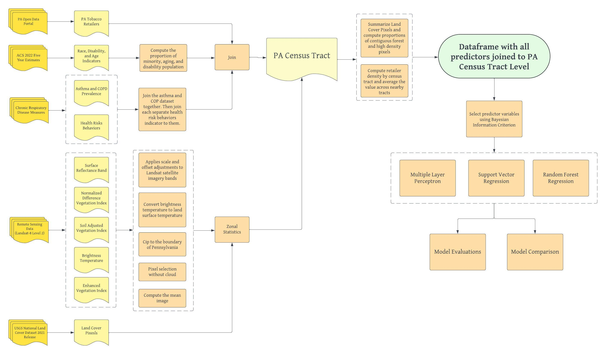

Introduction
Respiratory illnesses are among the most common chronic health issues, negatively impacting the daily lives of millions of people worldwide and placing substantial burdens on healthcare systems. In the United States alone, more than 15.7 million people suffer from Chronic Obstructive Pulmonary Disease (COPD), which, along with asthma and other chronic lower respiratory diseases, remains a leading cause of death. Although there is currently no cure for COPD or asthma, proper medication and preventative measures can help control the manifestation of severe symptoms and slow disease progression. Individuals with preexisting respiratory conditions, such as asthma and COPD, also face increased risks of severe illness from other diseases, including COVID-19.
An essential component of preventative care for respiratory illnesses lies in understanding the integral role environmental and personal factors play in the manifestation of symptoms. Behavioral factors, such as smoking tobacco, are well-documented contributors to COPD risk. Local environmental factors, including proximity to high-density development, forests, grasslands, or long-term exposure to pollens, can also exacerbate respiratory conditions, such as asthma. Additionally, sociodemographic factors—such as income, education, and healthcare access—are crucial determinants of individual health outcomes.
In geospatial health studies, predictive models are widely used to analyze disease outbreaks by integrating geographic variables, sociodemographic factors, and remote sensing data as proxies for local environmental conditions. These models, traditionally built on regression methods, have evolved to include machine learning techniques that can account for nonlinearity and complex interactions among variables.
The recent COVID-19 pandemic has underscored the critical need for risk identification, as individuals with preexisting respiratory conditions often experience more severe symptoms and higher mortality rates. Although COPD is not transmissible, these outcomes highlight the vulnerability of individuals with chronic illnesses during widespread infectious disease outbreaks. Identifying high-risk groups at a neighborhood scale is essential for targeted interventions, which can help reduce exposure and mitigate adverse outcomes during future pandemics. However, several challenges complicate this type of analysis. These challenges include the cost-prohibitive nature of highly localized data collection, difficulties in accessing confidential medical records, the complexity of interactions among determinants, and variations in human mobility and exposure to environmental conditions.
To address these challenges, this study investigates the determinants of chronic respiratory diseases at the neighborhood scale in Pennsylvani in 2022. By leveraging census tract-level data, tobacco retailer density, health behavior surveys, seasonal land cover classifications, and satellite-derived vegetation indices, we aim to identify significant predictors of COPD prevalence. Using multiple analytic techniques—such as multiple linear regression, multilayer perceptron, support vector regression, and random forest regression—we seek to provide a nuanced understanding of spatial disparities in respiratory health and enhance prediction accuracy across Pennsylvania.
Data Collection
To establish our machine learning models, this project utilizes multiple data sources, including the 500 Cities & PLACES Data Portal, the American Community Survey (ACS), the National Land Cover Database (NLCD), and satellite imagery from Landsat 8 processed through Google Earth Engine.
COPD Data and Health Risks Behavior
The most geographically granular data for identifying COPD risk in the U.S. comes from the Centers for Disease Control and Prevention (CDC). In 2015, the CDC, in partnership with the Robert Wood Johnson Foundation, began collecting small-area estimates for 27 chronic disease measures, including respiratory illnesses, at the census-tract level across 500 major U.S. cities. Census tracts represent the smallest geographic units in the U.S. for which comprehensive population, socioeconomic, and demographic data are available. This dataset includes estimates for 40 measures, spanning various categories:
- Health outcomes (12 measures)
- Preventive services use (7 measures)
- Chronic disease-related health risk behaviors (4 measures)
- Disabilities (7 measures)
- Health status (3 measures)
- Health-related social needs (7 measures)
The model-based estimates are derived from several sources, including the Behavioral Risk Factor Surveillance System (BRFSS) 2021 or 2022 data, Census Bureau 2020 population data, and ACS 2018–2022 estimates. For this study, we specifically focus on COPD prevalence rates and the four chronic disease-related health risk measures.
Remote Sensing Data
Remote sensing data serve as effective proxies for understanding local environmental conditions. They are easily retrievable, accurate, open-source, and enable rapid analysis, making them invaluable for health and environmental studies.
One of the most renowned satellite remote sensing missions is the Landsat program, which began in 1972. The latest satellite in this program, Landsat 8, is equipped with the Operational Land Imager (OLI) and the Thermal Infrared Sensor (TIRS). Landsat 8 provides a comprehensive spatial and temporal perspective of the Earth, supporting a range of applications and enabling the retrieval of variables such as vegetation, land use, aerosol particles, and meteorological data.
For this study, we utilize Landsat 8 Level 2 images from Spring 2022 to Spring 2023 over the study area. The primary advantage of these images is that they include geometrical, radiometric, and atmospheric corrections using the Landsat 8 Surface Reflectance Code. Specifically, we employ the surface reflectance OLI bands to generate brightness temperature (BT) and various pre-processed vegetation indices, such as the Normalized Difference Vegetation Index (NDVI), the Soil-Adjusted Vegetation Index (SAVI), and the Enhanced Vegetation Index (EVI).
Additionally, we incorporate the latest land cover data as proxies for local environmental characteristics. The U.S. Geological Survey (USGS), in collaboration with several federal agencies, publishes the National Land Cover Database (NLCD). This dataset offers nationwide land cover classifications derived from 30-meter resolution satellite imagery. It includes eight main land cover classes and 20 sub-classes, ranging from high-density development areas to grasslands, open water, and forests. The NLCD is publicly available and provides a critical resource for analyzing the interplay between land cover and health outcomes.
Census and Tobacco Retailers Data
This study incorporates two additional data sources: the American Community Survey (ACS) five-year estimates (2022) and tobacco retailer data from the Pennsylvania Open Data Portal.
The ACS dataset, which is publicly available and accessible via the Census API, provides comprehensive demographic and socioeconomic information at various geographic levels. For this analysis, we focus on attributes such as disability status, age, race, and ethnicity. These variables are particularly relevant as they help identify populations vulnerable to Chronic Obstructive Pulmonary Disease (COPD) and other chronic respiratory conditions.
The tobacco retailer data, sourced from the Pennsylvania Open Data Portal, offers insights into the density and distribution of tobacco retailers across the state. We include this dataset because tobacco retailer density and smoking prevalence are well-established proxies for environmental exposure to health risks. This information enables a deeper understanding of local environmental factors contributing to respiratory illnesses.
Note: This section serves to introduce the data sources. Detailed discussions on attribute definitions, data extraction, transformation, and processing will be provided in the methodology section.
Study Workflow
Below is the workflow diagram for this project, along with a brief description of each step:

First, Landsat data is processed by applying scale factors and cloud masking. A median composite image for the 2022 study period is then calculated, categorized by season, and clipped to the area of interest (Pennsylvania). After calculating the relevant indices for each season, zonal statistics are applied, and pixel values are aggregated to the census tract level.
Next, the National Land Cover Database (NLCD) data is geo-referenced using the boundaries of the census tracts. The proportion of each land cover sub-class within each census tract is calculated. To capture variations in the distribution of land cover, additional features are introduced, such as the proportion of highly developed land pixels neighboring other highly developed land pixels and the proportion of forest pixels neighboring other forest pixels. These features account for spatial patterns that could influence health outcomes, such as pollution from developed areas and exposure to pollen from forests, both of which may impact individuals with asthma and COPD.
The tobacco retailer data is then aggregated to the census tract level, and the density of tobacco retailers is computed. To account for environmental exposures from neighboring tracts, the density from neighboring census tracts is averaged using queen contiguity, acknowledging that individuals often travel outside their census tracts for work or recreational purposes.
Census data from the American Community Survey (ACS) is also incorporated, with a focus on race, disability, and age indicators. For each census tract, the proportions of the population that are minorities, elderly, or disabled are calculated. Additionally, the CDC’s chronic disease risk data, which includes health risk behavior indicators, is joined to the census tract dataset. To estimate the seasonal prevalence of COPD, existing literature is used, as the original dataset provides only annual rates.
Once all data sources are merged into a single dataframe for Pennsylvania census tracts, null values are replaced with zeros, and census tracts with missing data are removed. To reduce multicollinearity, Bayesian Information Criterion (BIC) is used to select predictor variables. Finally, several machine learning models, including random forests, multi-layer perceptrons, and support vector regression, are run. The models are evaluated using R² and RMSE (Root Mean Square Error), and the most important predictors for each season are identified, revealing the key factors influencing COPD prevalence.
Note: This section serves to introduce the workflow. Details on the execution of each step, particularly using Python, will be provided in the methodology and analysis section.